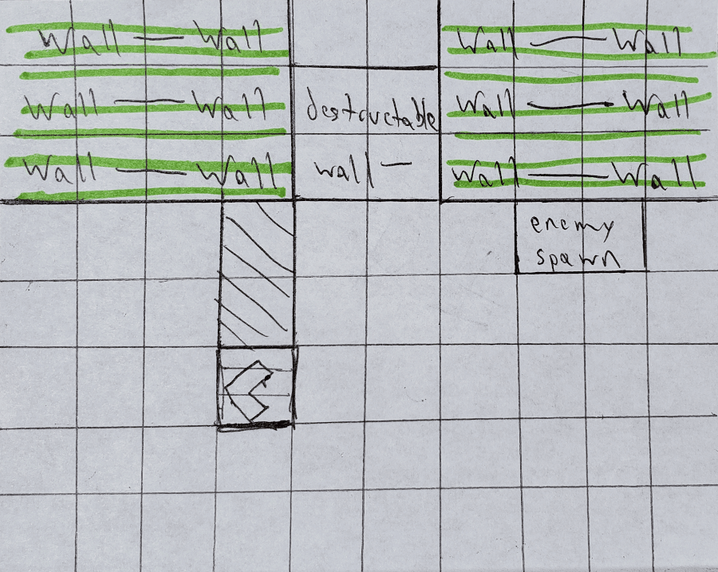
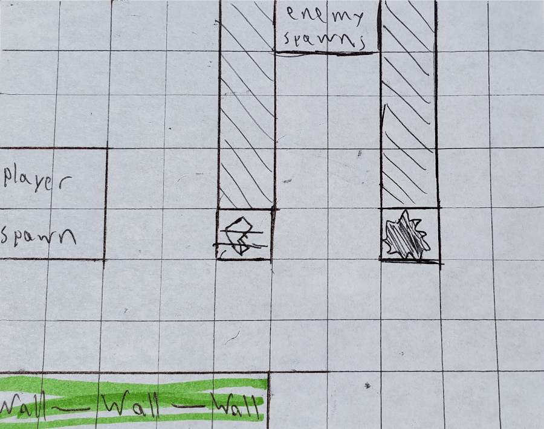
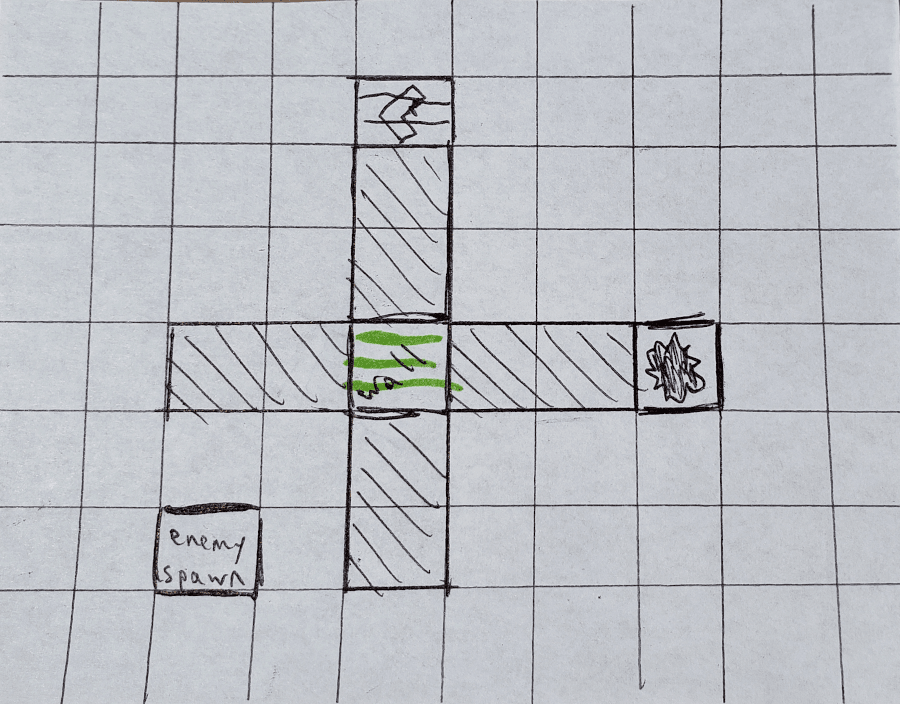
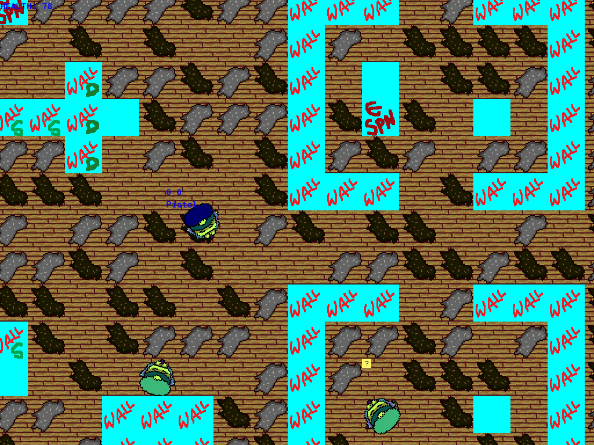
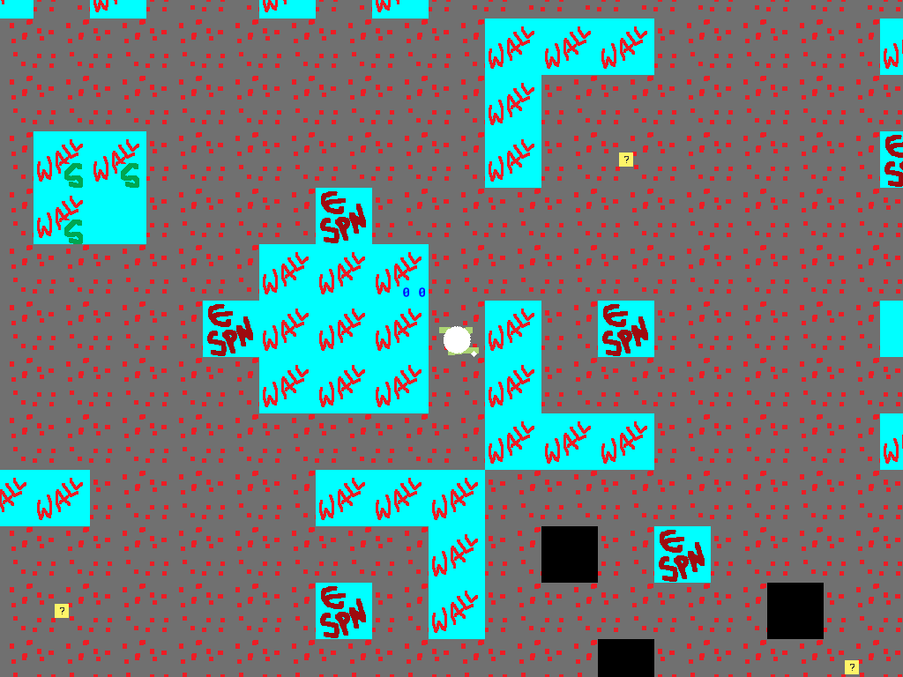
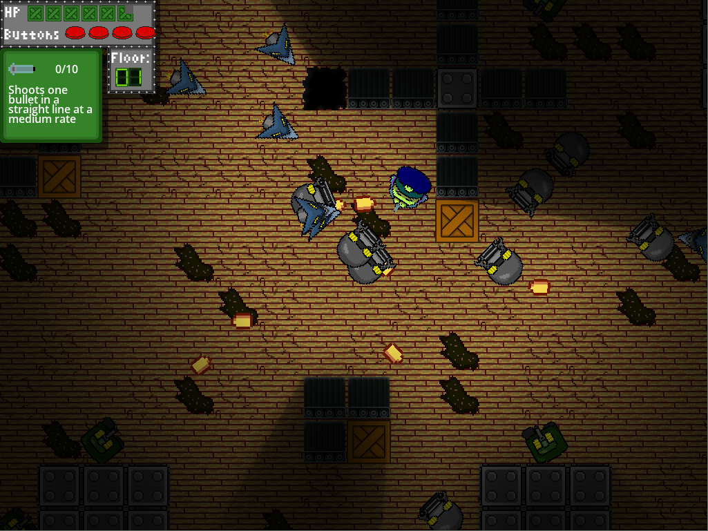
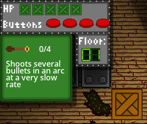

The Rejected Gun Factory is a game born from 3 requests:
Make a game from scratch, though you can use pre-existing sounds and art if you have to.
Make a game around the theme ‘Out of Control’.
Make everything in 48 hours or less.
Game Maker’s Toolkit, a YouTube channel that dives into game design, level design, and game production, has hosted a game jam with these three rules annually since 2017 (with different themes each year). This year, my team and I banded together to create our wacky, wild take on the classic twin stick shooter.
We started off by brainstorming all the different ways we could go about the theme. Possibilities included a shooter, where your bullets actively avoided enemies, a game where you could only control the level, or one where the player's controls were randomized every time one was used. After plenty of discussion, we decided to explore the two ideas that had generated the most buzz:
A game where the player had to map multiple actions to a few keys, so that when a given key was pressed, it wasn’t guaranteed which action would be performed.
A game where the player had to pick up random guns, not all of which would help the player on their mission.
Taking some time to discuss what each of these games could look like, and the feasibility of completing them in time, ultimately led us to pick the option with the random guns. With the decision made on how we were to proceed, we began to create.
Designing the level
I immediately began work on the level design. We decided to semi-randomly generate each level, to help keep the player on their toes, and to deny the player the feeling of mastering a pre-built level. To implement this, I designed several map “blocks” that would be randomly distributed throughout a larger grid. The blocks included elements such as enemy spawn points, various kinds of walls, and weapon pickup locations, taking care to make sure the player could access every important tile of every block, regardless of where the block was placed.



Polishing the experience
Once we had a level, and some very rough assets put together, I started testing builds, looking for ways to improve the experience. One such improvement was to make the bottomless pits more forgiving, to make navigating the frequent chaotic situations a little easier. Another tweak was to widen the passageways that were only one tile wide, since our walls felt very ‘sticky’.


Several key decisions were also made at this point in the design:
Letting the player survive multiple hits.
Making the goal to clear as many floors as they can.
Adding a requirement that four buttons be pressed prior to exiting the floor.

Adding the UI
With most of the game made, I built a user interface to provide the player with the information they needed. During gameplay, there were five things the player needed to know at a glance:
Their current health.
The number of buttons they have remaining on their current floor.
Their current floor.
What gun they currently have/ information about what it does.
Their current ammunition level.

Completing the game
Ultimately, we were able to submit The Rejected Gun Factory to the jam with a comfortable amount of spare time in case something went wrong during the upload.
There are, of course, several areas our title could be improved. For instance, I would have liked to make finding the buttons a little easier, as just completing the first floor can be quite difficult. However, given the extreme time constraints we faced, we were all very pleased with the end result, and even picked up a few ideas to carry forward into our next titles. If you enjoyed the game, or have thoughts you would like to share about it, feel free to reach out!